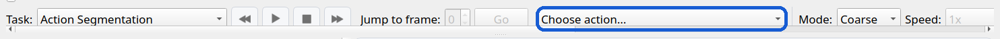
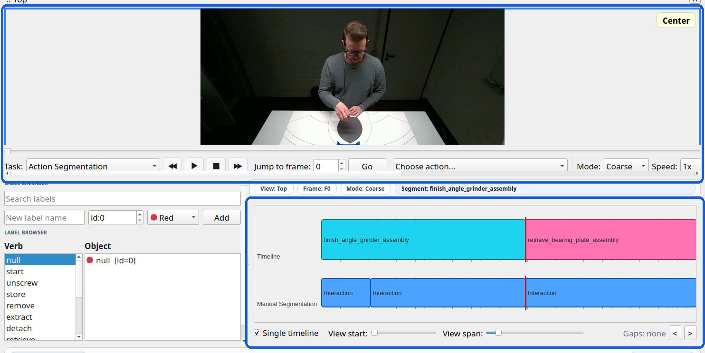
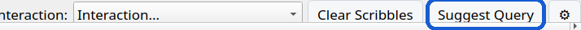
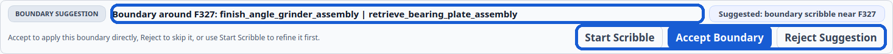
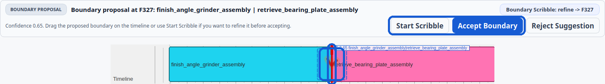

IMPACT-Scribe Quick Start
This version keeps the explanation text separate from the screenshots so the UI details stay large and readable.
Step 1. Load a video or baseline
Start from the top action bar. Open a session, load a video, or import an existing segmentation before review begins.
- Use the action menu for Open Session, Load Video, or Import JSON.

Step 2. Inspect the loaded workspace
Once the baseline is loaded, review the current video frame together with the action timeline before making edits.
- The video panel gives visual context for the current frame.
- The timeline is the baseline segmentation you will review and refine.

Step 3. Click Suggest Query
When the baseline is ready, ask the planner which lightweight boundary or label question to review next.
- Click Suggest Query to generate the next focused review target.

Step 4. Review the suggestion
After you click Suggest Query, the footer summarizes the next lightweight boundary or label question.
- Read the suggested boundary or label target before editing.
- Accept and Reject live in the bottom-right action area.

Step 5. Refine the boundary and accept
Draw one uncertain stroke across the suspicious split. If the proposal is close, drag the red line and accept the suggestion.
- Start with one uncertain stroke across the suspicious boundary region.
- If the split is slightly off, drag the red proposal line before accepting it.
- Use Start Scribble for local refinement, then Accept in the bottom-right to write it back.
